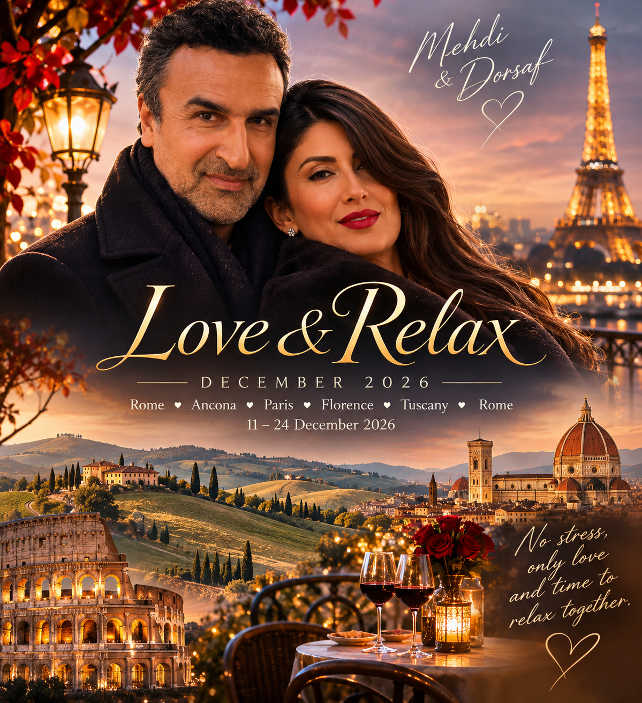

Scene 01 · 17:05
The reunion
Paris arrival at 17:05. The countdown ends; our first moments together begin. Arrival times are from our itinerary.
See December 15 plans ↗
Of all the roads I could have taken, somehow mine led to you. And now, every mile between us is simply one mile closer to the moment I get to hold you again.
Paris will give us its lights. Florence will give us its beauty. Tuscany will give us its golden hills, and Rome will give us its timeless streets. But what makes every place extraordinary is you.
I don't want us to rush through these days. I want us to laugh, to get lost, to share quiet moments, and to remember that the most beautiful part of this journey is being together.
This is our little story, written one day, one city, and one unforgettable moment at a time.
“The best part of every journey is sharing it with you.”
Your complete itinerary, transformed into a travel experience. Open a day, explore a restaurant, find an address, or admire the places we'll visit. Flights and trains have their own travel cards.
The first evening of our story. Two journeys become one, in the City of Light. From the airport to Saint-Germain, every minute belongs to us.
Paris arrival at 17:05. The countdown ends; our first moments together begin. Arrival times are from our itinerary.
See December 15 plans ↗
20 Rue Monsieur le Prince, in the heart of the Left Bank. A little time to settle in and enjoy being together.
Explore the neighborhood ↗
Le Relais de l’Entrecôte, Saint-Germain. Our first Paris dinner together at 21:30.
Restaurant website ↗“The best part of Paris isn't a place. It's who I'm sharing it with.”
Atmospheric photographs are illustrative, not official photographs of the hotel or restaurant. Times reflect our itinerary.
Four extraordinary evenings, from Parisian tradition to Florence’s Renaissance elegance and a glamorous Roman rooftop. Open each venue’s official website to see its real photographs, menus, and videos or virtual tours where available.
 Paris · December 15 · 21:30
Paris · December 15 · 21:30The beloved Saint-Germain steak-frites ritual. A classic Parisian night, just the two of us.
 Florence · December 17 · 21:00
Florence · December 17 · 21:00Michelin-starred Tuscan dining at the Four Seasons Firenze, surrounded by historic elegance.
 Florence · December 19 · 21:00
Florence · December 19 · 21:00A spectacular frescoed Renaissance setting at Palazzo Portinari Salviati. A dinner designed like a theatrical act.
 Rome · December 22 · Dinner
Rome · December 22 · DinnerA glamorous rooftop dining experience at Anantara Palazzo Naiadi, with panoramic views and a chic evening atmosphere.
Card cover photographs are atmospheric illustrations, not images of the actual venues. Official venue links contain authentic restaurant content. Dates and times follow the existing itinerary, not confirmed reservations.
Eight magical stops from your illustrated Christmas Walk. Follow the sparkle, take a photo together at every stop, and save the best one for your memories.
Open the complete walking route ↗The full walk is approximately 4–5 hours with sightseeing, as shown in your itinerary. Confirm the best route and opening hours on the day.
A romantic road movie starring Mehdi & Dorsaf. Three days of art, ancient streets, beautiful countryside and moments worth remembering.

A city made for two — A slow day of cafés, beautiful streets and dinner at Il Pizzaiuolo. Lunch is planned at Trattoria Dall’Oste.
Explore the destination ↗
A kiss beneath the leaning tower — A playful stop by the Leaning Tower before continuing the day’s adventure.
Explore the destination ↗
Our little walled city — Walk the historic streets, discover Piazza dell’Anfiteatro, and enjoy lunch at Buca di Sant’Antonio.
Explore the destination ↗
A little Italian indulgence — An outlet-shopping interlude on the planned day trip, followed by your elegant evening at Atto di Vito Mollica.
Explore the destination ↗
A medieval fairytale — Piazza del Campo, narrow medieval lanes and a beautiful setting for photographs together.
Explore the destination ↗
The heart of wine country — A hilltop Tuscan town with sweeping countryside views and charming stone streets.
Explore the destination ↗
Towers and golden-hour dreams — Medieval towers, atmospheric squares and a sunset-worthy setting for the next chapter of your story.
Explore the destination ↗Find the prettiest doorway in Florence and take a photo together. ♥
Destination photographs are illustrative and may not depict the named place. The itinerary is unchanged; day-trip sequencing and opening hours should be confirmed before travel.
An eternal city. A few precious days. A love story that doesn't end when the journey does. From rooftop evenings to slow Roman mornings, these are our final scenes together.

Rome, together again. Arrive by Italo train at 15:13, settle into Via Sistina 107, enjoy an aperitif at Hotel de Russie, then dinner at Osteria La Segreta.
Explore location ↗
Coffee, kisses & cobblestones. A relaxed Roman breakfast at Barnum, with time for a spontaneous walk through the historic center.
Explore location ↗The city at our feet. A glamorous dinner above Rome, with rooftop atmosphere and a beautiful evening together.
Explore location ↗
One more Roman feast. Start with coffee at Sant’Eustachio, then share a classic Roman lunch at Il Vero Alfredo.
Explore location ↗Our last night in Rome. Dinner remains a choice between Da Enzo and Ivo a Trastevere. Wander Rome’s glowing lanes together.
Explore location ↗
Until our next hello. Dorsaf flies Rome–Tunis at 09:15; Mehdi flies Rome–Charlotte at 13:10. Different flights, one unforgettable story.
Explore location ↗“Some journeys end at the airport. Ours continues wherever our hearts go.”
Images are illustrative and may not depict the named venues. Dates and times reflect the current itinerary, not verified bookings.
One beautiful journey. Two hearts.